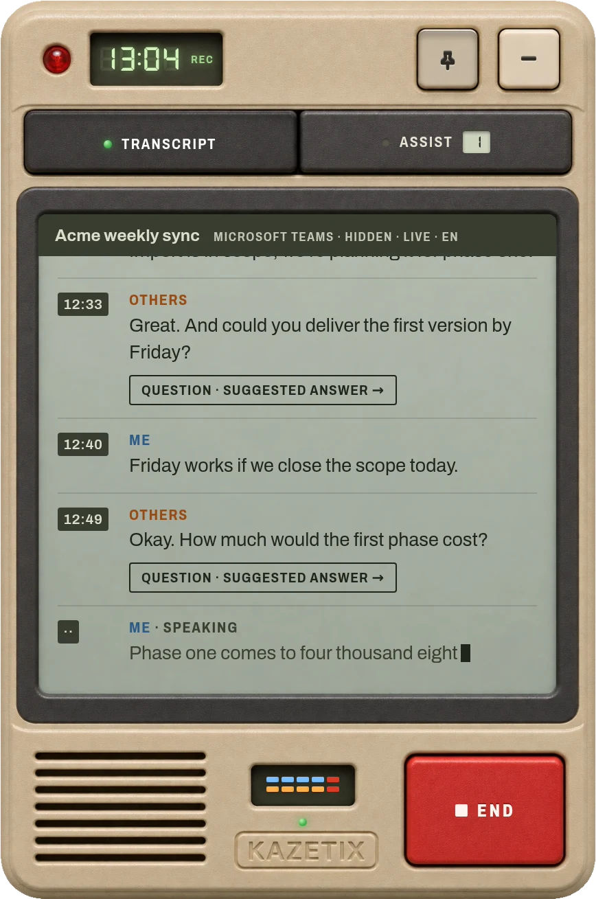
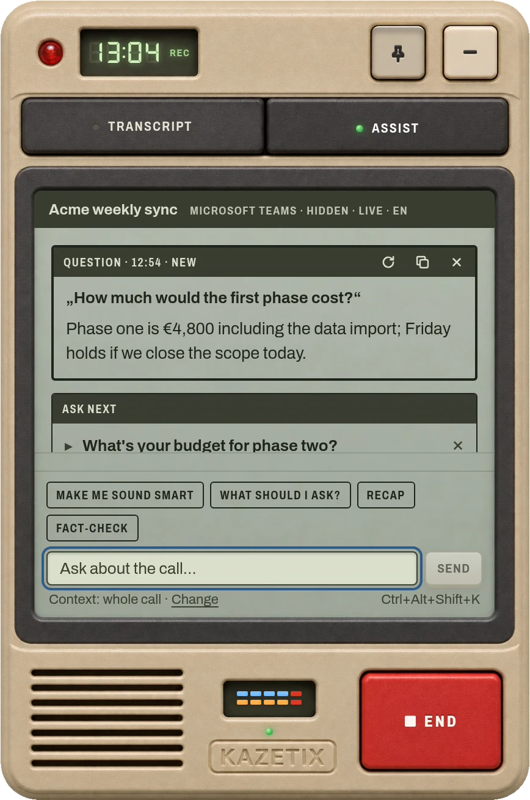
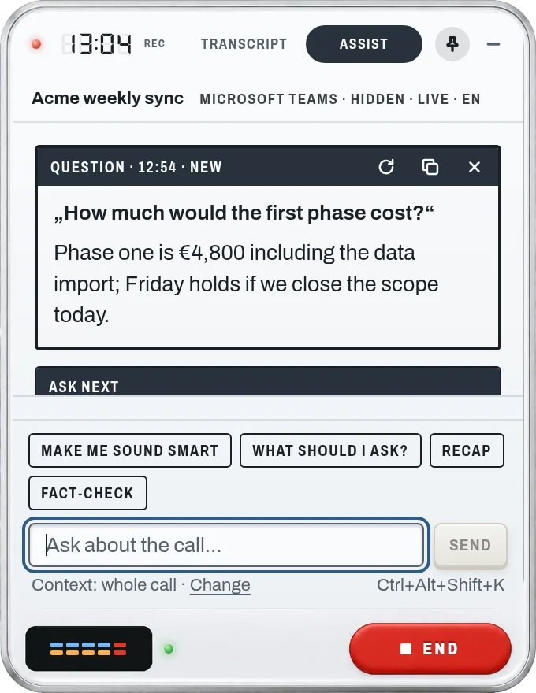
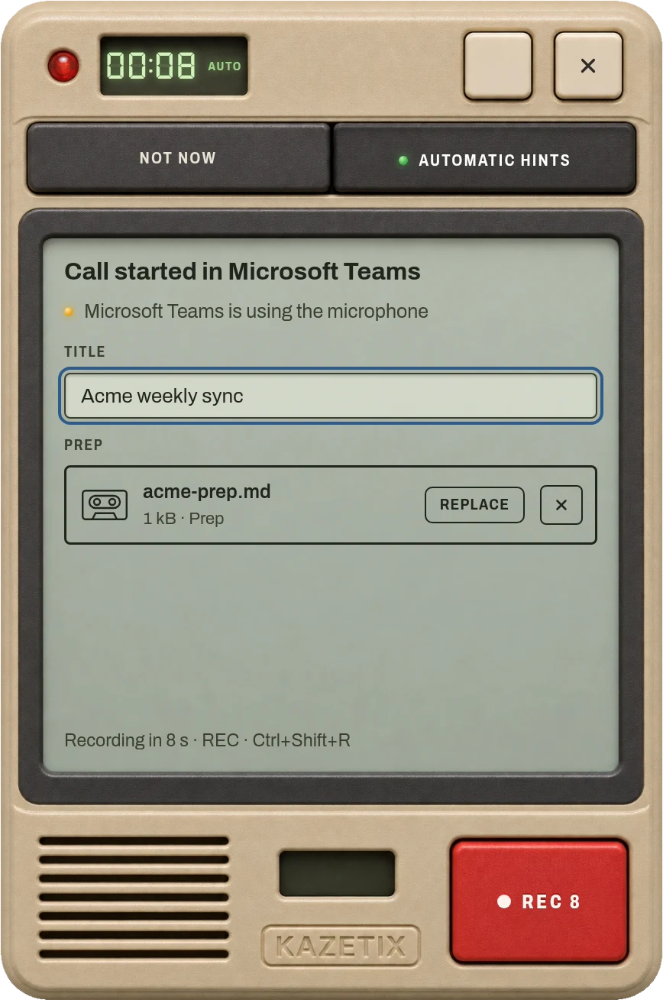
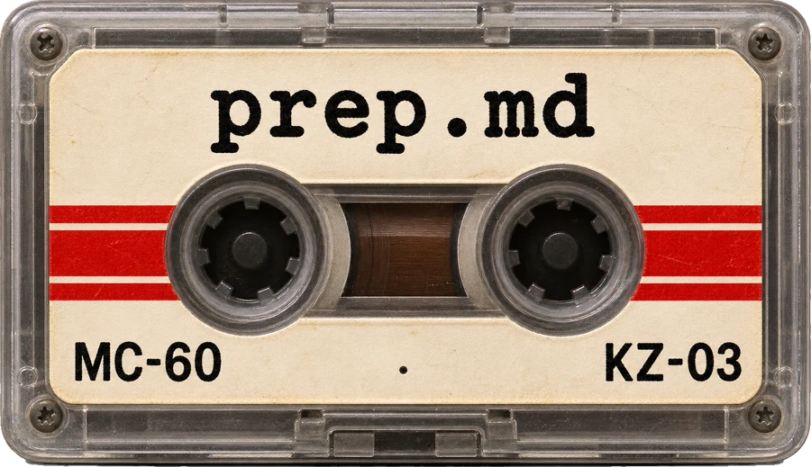
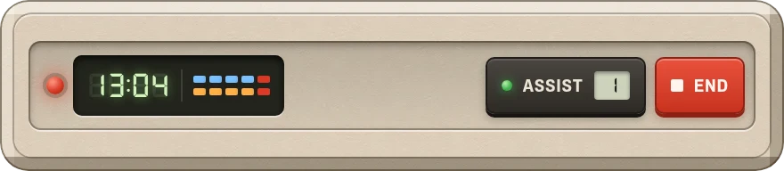
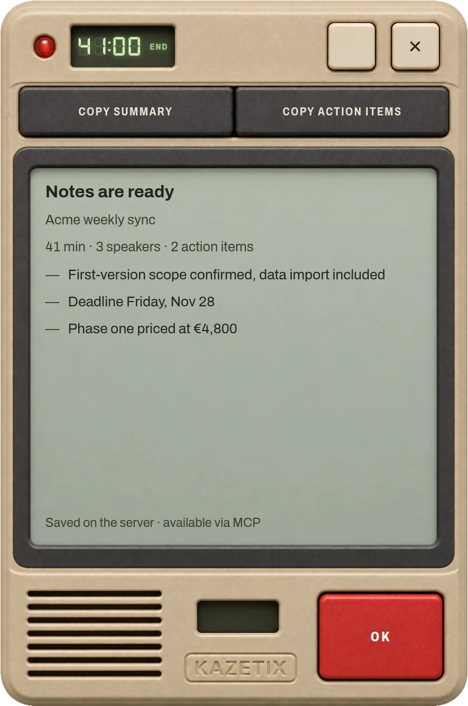
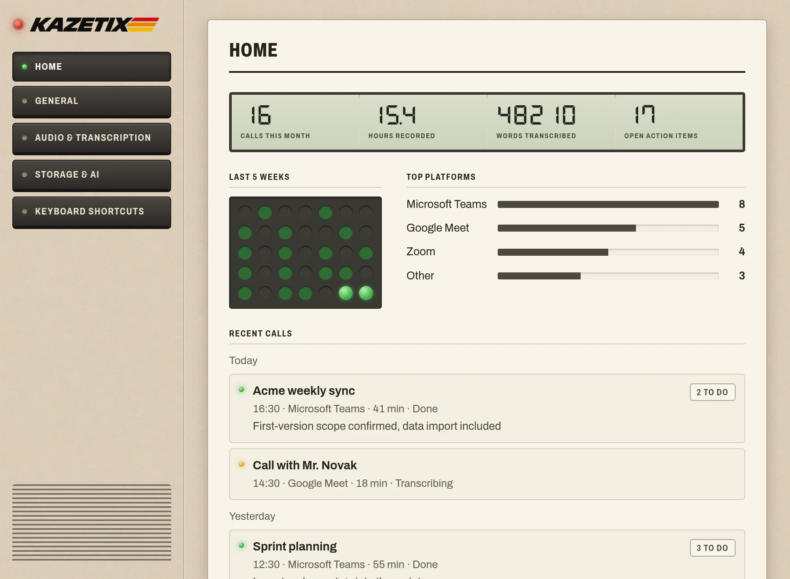

Kazetix listens to both sides of your call, suggests the answer when someone puts you on the spot, and has the notes ready a few minutes after you hang up.
Works withMicrosoft Teamsand any app that uses your microphone
Free, source on GitHub
No bot in your meeting
Your archive stays on your PC

01Both sides, live
02An answer when they ask
03Hidden from screen sharing
04Hit stop, the notes write themselves
KZ-01Technical data
Channels
2 · Me + Others, kept apart
Live text
1–3 s after each sentence
Prep
.md file or text from Claude or ChatGPT
Call start
Noticed automatically
Storage
On your PC, or your own server
Claude
Built-in MCP for Claude Desktop and Code
Skins
Original · Modern, both light and dark
Two machines. Pick yours.
The same recorder in two housings. Switch any time in Settings; both come in light and dark, and you can drag either one bigger or smaller.

Original440 × 660The 1980s desk answering machine: big keys, a tape counter and a speaker grille.

Modern340 × 440A pocket machine with a hairline rim, half the size. The screen runs almost to the edge, so it fits next to the video on a laptop.
From the first ring to the last action item
Before the call

KZ-02
It notices the call before you do
The moment Teams, Zoom or your browser takes the microphone, Kazetix offers to record, with the meeting name already filled in. Answer with one key, or let it start on its own after a few seconds.
Works with any call app that uses the microphone
Title taken from the Teams, Meet or Zoom window
Ask every time, or auto-start after 5, 10 or 20 s

Insert
KZ-03
Load your prep like a cassette
Prep in Claude or ChatGPT, then drop in the .md file or just paste the text. During the call Kazetix answers from it and ticks off every point you meant to cover, so nothing important stays unsaid.
Budget discussed
Deadline: Friday
Confirm next steps
During the call
KZ-04
An answer while they’re still asking
When the others ask you something, Kazetix shows a short suggested answer built from what was said and from your prep. Next to it: the questions worth asking now, and a chat about the whole call.
Suggested answer to the last question
Up to three questions to ask next
“Make me sound smart”, recap and fact-check in one click

KZ-05
A small presence. Full attention.
Collapse the overlay into a strip at the top of the screen. When someone asks you a question, the suggested answer slides out under it, then gets out of the way.
After the call

KZ-06
Notes done before your next meeting
When you hang up, Kazetix makes an exact transcript with speakers, a summary and action items, right on your PC (or on your own server), ready to paste anywhere.

KZ-07
Every call at a glance
Open Kazetix and your archive is right there: how much you talked this month, what is still open, and every recent call with its summary and action items, one click from your clipboard.
Calls, hours, words and open action items on one display
Five weeks of activity and your top call apps
Recent calls with summary and action items
Four steps, then it just runs
InstallDownload the app, or paste one prompt into Claude or ChatGPT and let it set everything up.
PrepareOptional: drop in your prep notes from Claude or ChatGPT before the call.
Call like you always doJoin from any app. Kazetix notices the call, records it and helps right beside it.
Ask Claude laterEvery call lands in your archive. Ask Claude what was agreed, who owes what, and by when.
Your calls stay yours
Your recordings, transcripts and notes live on your PC, and Claude reads them through the built-in MCP. Audio goes only to the transcription model, through your own OpenRouter key. No bot in the meeting, and the overlay never shows up when you share your screen.
Built in, on your PC
The default. Recordings, transcripts, summaries and action items are stored on your computer. Nothing to install besides the app.
Claude in one click
Settings → Connect Claude adds Kazetix to Claude Desktop. Claude Code takes one command:
claude mcp add kazetix -- Kazetix.exe --mcp
Your own server, optional
For teams and claude.ai on the web: run the Kazetix server from our GitHub repo in Docker behind your HTTPS and point the app at it.
docker compose -f docker/docker-compose.yml up -d
Free today. Even simpler soon.
Available now
Free, source available
Free · bring your own keys
Everything in this catalog, on Windows 10 and 11
Archive and MCP built into the app, or your own server
Kazetix Cloud (sign in, no keys) and the Mac version are on their way. Leave your email and we’ll write once, when your pick is ready.
Before you ask
What does it cost?
Kazetix is free. You pay only your own OpenRouter usage: live transcription is billed for detected speech, up to about $0.44 per hour with two channels; the exact transcript after the call adds $0.22 per hour per channel; hints, chat and summaries are ordinary LLM usage.
Is it open source?
The source is public on GitHub under the Functional Source License (FSL-1.1). You can use Kazetix for free, read and change the code and run it for yourself or your company. You may not sell it or offer it as a competing product. Two years after each release, that version becomes Apache 2.0, a regular open-source license.
Does a bot join my meeting?
No. Kazetix records your microphone and your computer’s audio on your own PC, so it works with any call app and nobody sees an extra participant.
Will the others see it when I share my screen?
No. The overlay and the notifications are excluded from screen capture.
Which languages?
Calls in Czech, Slovak, English, German, Polish, or auto-detect. The app speaks English and Czech.
Do I need a server?
No. The archive and the MCP connection for Claude are built into the app. A server is only for teams or for using claude.ai on the web.
Mac or Linux?
Windows 10 (version 2004 or newer) and Windows 11 today. The Mac version is in the works: join the waitlist and we’ll tell you when it’s ready.
Can I just sign in instead of using a key?
Soon. Kazetix Cloud, with sign-in and a subscription, is in preparation; join the waitlist. Today everything AI goes through one OpenRouter key that you control.
Order form · KZ-01
Install with one prompt
Paste it into Claude or ChatGPT. It walks you through installing the app, adding your OpenRouter key and connecting Claude, and asks before anything that needs your keys.